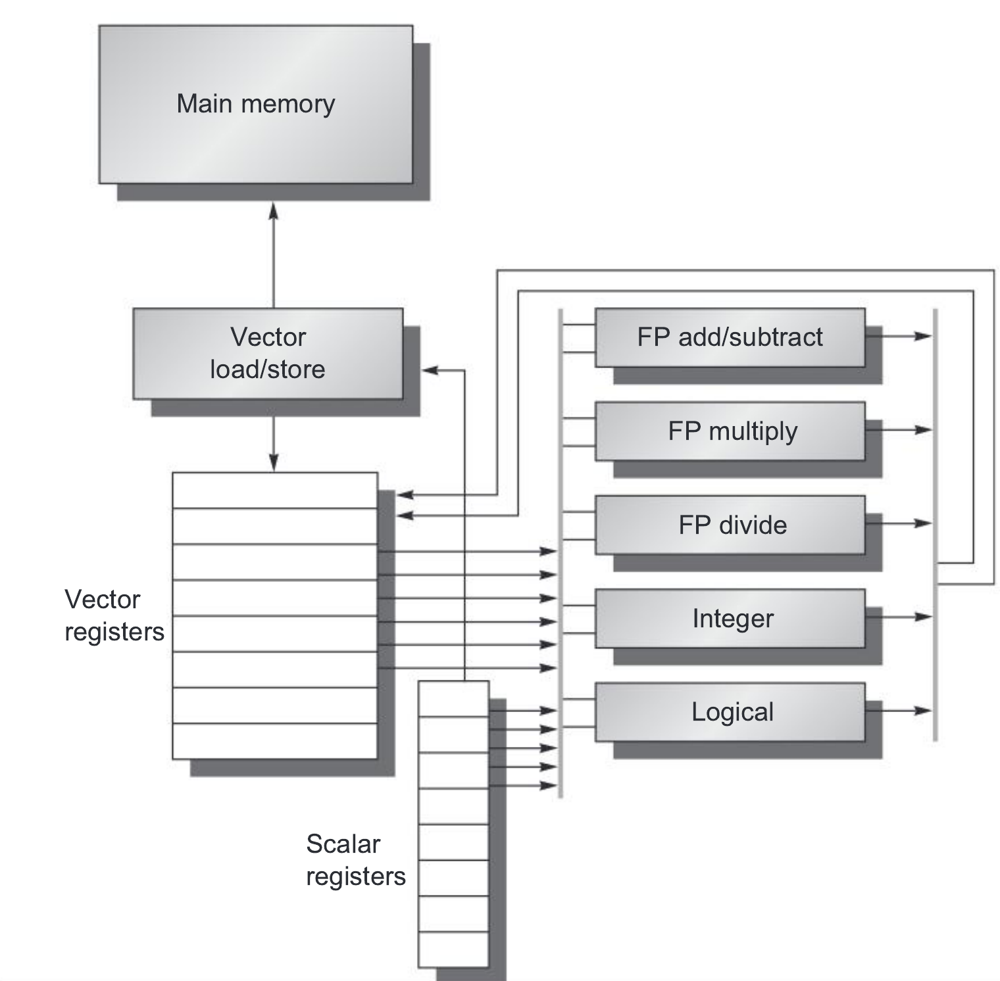
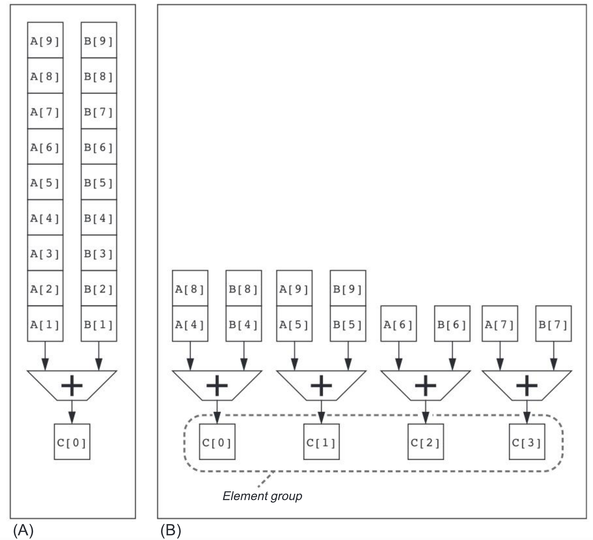
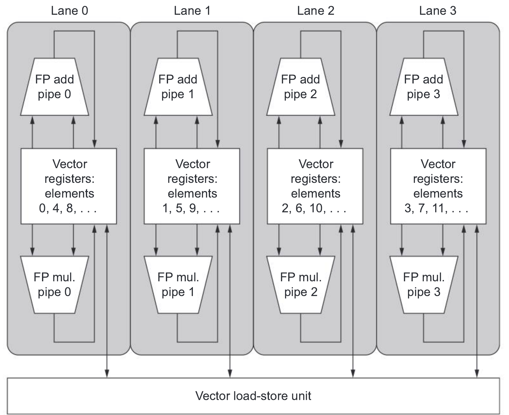
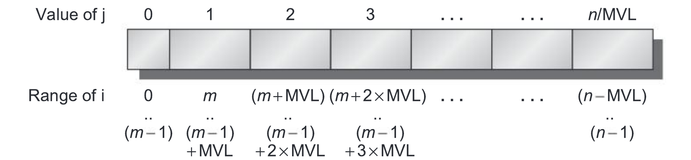

4.2 向量体系结构
执行可向量化应用最高效的方式是向量处理器。
——Jim Smith，International Symposium on Computer Architecture（1994）
向量体系结构的工作方式是：把散布在存储器各处的一组组数据元素取出来，放进大型的顺序寄存器堆，在寄存器堆中完成运算，再把结果分散写回存储器。一条指令处理的是一个向量的数据，相当于对相互独立的数据元素做几十次寄存器—寄存器操作。
这些大型寄存器堆相当于由编译器控制的缓冲区，作用有两个：隐藏访存延迟，充分利用存储带宽。向量 load 和 store 是深度流水的，程序只需每次向量 load 或 store 承受一次较长的访存延迟，而不是每个元素承受一次，于是延迟分摊到了比如 32 个元素上。向量程序的目标，就是让存储器始终保持忙碌。
现代微处理器受功耗限制，体系结构设计者因此看重这样的体系结构：性能好，又不必像高度乱序的超标量处理器那样付出能耗和设计复杂度的代价。向量指令正好符合这一趋势：用它可以提高简单的顺序标量处理器的性能，而能耗和设计复杂度不会大幅增加。Kozyrakis 和 Patterson（2002）的研究表明，许多在复杂乱序处理器上运行良好的程序，实际上都可以改写成向量指令形式的 DLP，而且效率更高。
RV64V 扩展
我们从一台向量处理器讲起，它的主要部件如图 4.1 所示。这台处理器大致以 50 年前的 Cray-1 为蓝本，Cray-1 是最早的超级计算机之一。指令系统采用 RISC-V 的向量扩展 RVV。向量扩展本身叫 RVV，RV64V 则是指 64 位 RISC-V 基本指令加上向量扩展。下面给出 RV64V 的一个简化子集，力求用几页篇幅讲清它的精髓。
RV64V 指令系统结构的主要组成部分如下：
- 向量寄存器：每个向量寄存器存放一个向量，RV64V 共有 32 个。向量寄存器堆要有足够多的端口，为所有向量功能部件供数，这样，对不同向量寄存器的向量操作才能高度重叠。读写端口合计至少有 16 个读端口和 8 个写端口，通过一对交叉开关与功能部件的输入或输出相连。提高寄存器堆带宽的一个办法是用多个存储体（bank）构成寄存器堆，向量比较长时这种办法效果很好。
- 向量功能部件：在我们的实现中，每个功能部件都是全流水的，每个时钟周期都能启动一个新操作。另需一个控制部件检测冒险，包括功能部件上的结构冒险和寄存器访问中的数据冒险。从图 4.1 可以看出，我们假设 RV64V 的实现有 5 个功能部件。为简单起见，本节只讨论浮点功能部件。
- 向量 load/store 部件：负责把向量从存储器装入，或者存入存储器。在我们假想的 RV64V 实现中，向量 load 和 store 是全流水的，经过初始延迟之后，向量寄存器与存储器之间每个时钟周期可以传送一个字。标量 load 和 store 通常也由这个部件处理。
- 一组标量寄存器：标量寄存器同样可以为向量功能部件提供输入数据，还可以计算地址，交给向量 load/store 部件。它们就是 RV64G 中普通的 31 个通用寄存器和 32 个浮点寄存器。标量值从标量寄存器堆读出后，由向量功能部件的一个输入端锁存。
- 与下一节的 SIMD 指令不同，一次数据并行操作包含多少个元素，不由指令的操作码决定。这个值称为最大向量长度（VLMAX），它属于向量体系结构的每一种实现，而不属于每一条指令。两种实现可以有相同的向量指令系统，而 VLMAX 不同。

指令的几种版本。 图 4.2 列出了本节用到的 RV64V 向量指令。图 4.2 的说明假设输入操作数都是向量寄存器，但这些指令也有某个操作数为标量寄存器（xi 或 fi）的版本。按源操作数的不同，每种向量指令分为几类：
- 源操作数都是向量寄存器，后缀
.vv； - 一个向量寄存器和一个标量整数寄存器，后缀
.vx； - 一个向量寄存器和一个标量整数立即数，后缀
.vi； - 一个向量寄存器和一个标量浮点寄存器，后缀
.vf。
既然版本由操作数决定，我们通常让汇编器自动加上合适的后缀。标量值的副本在指令发射时交给向量功能部件。
图 4.2 RV64V 向量指令。所有指令都采用 R 型指令格式。表中每个双操作数的向量操作都按两个操作数均为向量（.vv）的形式给出，但这些操作还有第二个操作数为标量寄存器的版本（.vs）；在有区别时，还有第一个操作数为标量寄存器、第二个操作数为向量寄存器的版本（.sv）。操作数的类型和宽度由各个向量寄存器的配置决定，不由指令给出。除了向量寄存器和谓词寄存器，还有两个向量控制和状态寄存器（CSR）vl 和 vctype，后面会讨论。带步长的数据传送和带索引的数据传送也在后面解释。
| 助记符 | 名称 | 说明 |
|---|---|---|
vadd |
ADD | 整数加：V[rs1] 与 V[rs2] 的元素相加，每个结果放入 V[rd] |
vsub |
SUBtract | 整数减：V[rs1] 的元素减去 V[rs2] 的元素，每个结果放入 V[rd] |
vmul |
MULtiply | 整数乘：V[rs1] 与 V[rs2] 的元素相乘，每个结果放入 V[rd] |
vdiv |
DIVide | 整数除：V[rs1] 的元素除以 V[rs2] 的元素，每个结果放入 V[rd] |
vmacc |
Multiply ACCumulate | 整数乘：V[rs1] 与 V[rs2] 的元素相乘，每个结果累加到 V[rd] |
vfadd |
Fp ADD | 浮点加：V[rs1] 与 V[rs2] 的元素相加，每个结果放入 V[rd] |
vfsub |
Fp SUBtract | 浮点减：V[rs1] 的元素减去 V[rs2] 的元素，每个结果放入 V[rd] |
vfmul |
Fp MULtiply | 浮点乘：V[rs1] 与 V[rs2] 的元素相乘，每个结果放入 V[rd] |
vfdiv |
Fp DIVide | 浮点除：V[rs1] 的元素除以 V[rs2] 的元素，每个结果放入 V[rd] |
vfmacc |
Fp Multiply ACCumulate | 浮点乘：V[rs1] 与 V[rs2] 的元素相乘，每个结果累加到 V[rd] |
vxor |
XOR | V[rs1] 与 V[rs2] 的元素按位异或，每个结果放入 V[rd] |
vor |
OR | V[rs1] 与 V[rs2] 的元素按位或，每个结果放入 V[rd] |
vand |
AND | V[rs1] 与 V[rs2] 的元素按位与，每个结果放入 V[rd] |
vsll |
Shift Left | V[rs1] 的元素左移 V[rs2] 位，每个结果放入 V[rd] |
vsrl |
Shift Right | V[rs1] 的元素右移 V[rs2] 位，每个结果放入 V[rd] |
vsra |
Shift Right Arithmetic | V[rs1] 的元素右移 V[rs2] 位，同时扩展符号位，每个结果放入 V[rd] |
vpeq |
Compare = | 比较 V[rs1] 与 V[rs2] 的元素。相等时，在 V[0] 对应的 1 位元素中置 1，否则置 0 |
vpne |
Compare != | 比较 V[rs1] 与 V[rs2] 的元素。不相等时，在 V[0] 对应的 1 位元素中置 1，否则置 0 |
vmxor |
Mask XOR | V[rs1] 与 V[rs2] 最低位的 1 位元素按位异或，每个结果放入 V[0] |
vmor |
Mask OR | V[rs1] 与 V[rs2] 最低位的 1 位元素按位或，每个结果放入 V[0] |
vpmand |
Mask AND | V[rs1] 与 V[rs2] 最低位的 1 位元素按位与，每个结果放入 V[0] |
vlei |
Contiguous Load（连续装入） | 从地址 R[rs1] 开始的存储器中把向量装入寄存器 V[rd]（i 位元素，i = 8、16、32 或 64；vl 设定元素个数） |
vlsei |
Strided Load（带步长装入） | 从地址 R[rs1] 开始、按 R[rs2] 中的步长把数据装入 V[rd]，即地址为 R[rs1] + j × R[rs2]，j = 0, 1, … |
vloxei |
Indexed Load (Gather)（带索引装入，集中） | 用元素位于 R[rs2] + V[rs2] 处的向量装入 V[rs1]（即 V[rs2] 是索引） |
vsei |
Contiguous Store（连续存储） | 把向量寄存器 V[rd] 存入从地址 R[rs1] 开始的存储器 |
vssei |
Strided Store（带步长存储） | 把 V[rd] 存入地址为 R[rs1]、步长在 R[rs2] 中的存储器（即 R[rs1] + j × R[rs2]，j = 0, 1, …） |
vsoxei |
Indexed Store (Scatter)（带索引存储，分散） | 把 V[rs1] 存入元素位于 R[rs2] + V[rs2] 处的存储器向量（即 V[rs2] 是索引） |
setvl |
Set vector length | 设置元素宽度和寄存器个数（在 vtype 中），并把 vl 和目的寄存器设为 mvl 与源寄存器两者中的较小值 |
数据宽度。 传统的向量体系结构不能高效地支持窄数据类型，但向量本身天然能够容纳不同的数据宽度（Kozyrakis 和 Patterson，2002）。一个向量寄存器如果有 32 个 64 位元素，同样可以看成 128 个 16 位元素，甚至 256 个 8 位元素。正因为硬件能这样一物多用，向量体系结构既能用于多媒体应用，也能用于科学应用。
图 4.2 中的 RV64V 指令都没有给出数据宽度。这是 RV64V 的一项创新：数据宽度不像通常那样由指令给出，而是附属于每个向量寄存器。因此，程序在执行向量指令之前，要先配置所用的向量寄存器，指定它们的宽度。图 4.3 列出了 RV64V 可选的宽度。指定的办法是设置一个状态寄存器，把其中的标准元素宽度字段 SEW 设为相应的位数，例如 64。
图 4.3 RV64V 支持的数据宽度，这里假设它还有单精度和双精度浮点扩展 RVS 和 RVD。在这样的 RISC-V 设计中加入 RVV，标量部件也必须加入 RVH。RVH 是一种标量指令扩展，用于支持半精度（16 位）IEEE 754 浮点数。RV32V 没有双字标量操作，因此它的向量部件可以去掉 64 位整数。如果某种 RISC-V 实现不包含 RVS 或 RVD，就可以省去向量浮点指令。
| 类型 | 宽度 |
|---|---|
| 整数 | 8、16、32 和 64 位 |
| 浮点 | 16、32 和 64 位 |
动态寄存器类型的好处。 这种做法称为动态寄存器类型，它有三个好处。
一是指令少。传统向量体系结构要支持这么多种宽度，需要很多条指令。按图 4.3 中的宽度种数计算，如果没有动态寄存器类型，图 4.2 会长得多。而且类型一经设定就不再改变，只指定一次，比每条指令都指定更高效。
二是程序员可以更好地利用向量寄存器堆。用不了多少向量寄存器的程序，可以把几个寄存器合起来，组成更长的向量。例如，设向量存储空间共 1024 字节，某个程序只需要 4 个存放 64 位浮点数的向量寄存器，它就可以把这块空间当作 4 个 256 字节的向量来用，每个向量有 256/8 = 32 个元素。具体做法是设置一个状态寄存器，把其中的长度倍增字段 LMUL 设为 8，表示每 8 个寄存器合成一组，于是只有 4 个可用的向量寄存器。
对向量体系结构有一种批评：状态多，上下文切换就慢。我们的 RV64V 实现使状态变为原来的 3 倍，从 2 × 32 × 8 = 512 字节增加到 2 × 32 × 8 + 1024 = 1536 字节。为了降低上下文切换的开销，处理器会记录自上次上下文切换以来软件有没有写过向量寄存器。
三是不同宽度操作数之间的转换，可以根据寄存器的配置，在算术指令中隐式完成，不必另加显式的转换指令。下一节会给出这方面的例子。
向量访存与控制寄存器。 vle 和 vse 分别是向量 load 和向量 store，一次装入或存储一整个向量。它们有两个操作数：一个是要装入或存储的向量寄存器，另一个是 RV64G 通用寄存器，存放向量在存储器中的起始地址。除了向量寄存器本身，向量操作还要用到另外几种寄存器：向量的自然长度不等于 VLMAX 时，要用向量长度寄存器 vl；向量类型寄存器 vtype 记录寄存器的类型；循环中有 IF 语句时，要用谓词寄存器 pi。下面的例子会说明它们的用法。
有了向量指令，系统可以用多种方式对向量中的数据元素执行操作，包括同时处理许多元素。这种灵活性让向量设计可以用速度慢但宽度大的执行部件，以较低的功耗获得较高的性能。而且，向量指令系统中各元素相互独立，扩展功能部件时不必像超标量处理器那样另做代价高昂的相关检查。
向量处理器的工作原理：一个例子
理解向量处理器，最好的办法是看一个 RV64V 的向量循环。本节始终以下面这个典型的向量问题为例：
\[ \mathrm{Y} = \mathrm{a} \times \mathrm{X} + \mathrm{Y} \]
其中 X 和 Y 是向量，开始时存放在存储器中，a 是标量。这就是 SAXPY 循环或 DAXPY 循环，它构成 Linpack 基准测试程序的内层循环（Dongarra 等，2003）。SAXPY 是 single-precision a × X plus Y（单精度 a × X 加 Y）的缩写，DAXPY 是 double-precision a × X plus Y（双精度 a × X 加 Y）的缩写。Linpack 是一组线性代数例程，Linpack 基准测试程序由执行高斯消去的例程组成。
暂且假设向量寄存器的元素个数，即长度（32），正好等于我们所关心的向量操作的长度。这一限制很快就会去掉。
例题 给出 DAXPY 循环的 RV64G 代码和 RV64V 代码。假设 X 和 Y 都有 32 个元素，X 和 Y 的起始地址分别在 x5 和 x6 中。（元素个数不是 32 的情况，后面另有例题讨论。）
解答 RISC-V 代码如下：
fld f0,a # 装入标量 a
addi x28,x5,#256 # 要装入的最后一个地址
Loop: fld f1,0(x5) # 装入 X[i]
fmul.d f1,f1,f0 # a × X[i]
fld f2,0(x6) # 装入 Y[i]
fadd.d f2,f2,f1 # a × X[i] + Y[i]
fsd f2,0(x6) # 存入 Y[i]
addi x5,x5,#8 # X 的下标加 1
addi x6,x6,#8 # Y 的下标加 1DAXPY 的 RV64V 代码如下：
vsetvl a3,a0,e64,m8,ta,ma # 4 个 64 位向量寄存器（SEW=64，LMUL=8）
fld f0,a # 装入标量 a
vle64 v0,(x5) # 装入向量 X
vfmul v8,v0,f0 # 向量-标量乘
vle64 v16,(x6) # 装入向量 Y
vfadd v24,v8,v16 # 向量-向量加
vse64 v24,(x6) # 存储和向量操作生成哪种版本，由汇编器决定：乘法有一个标量操作数，汇编器就生成 vfmul.vf；加法没有标量操作数，就生成 vfadd.vv。第一条指令把前 4 个向量寄存器配置成存放 64 位数据。
指令带宽。 上面两段代码最显著的区别在于，向量处理器大大降低了动态指令带宽：RV64V 只执行 8 条指令，RV64G 却要执行 258 条。原因有两个：一是向量操作一次处理 32 个元素；二是在 RV64G 上几乎占循环一半的开销指令，在 RV64V 代码中都不需要了。如果编译器为这样的指令序列生成了向量指令，而且生成的代码大部分时间运行在向量模式下，就称这段代码是向量化的或可向量化的。循环能否向量化，要看各次迭代之间有没有相关；没有相关的循环就可以向量化。迭代之间的相关称为循环携带相关（loop-carried dependence，见 4.5 节）。
流水线互锁。 两者的另一个重要区别，是 RV64G 简单实现上流水线互锁的频率。在直接写出的 RV64G 标量代码中，每条 fadd.d 都要等前面的 fmul.d，每条 fsd 又要等 fadd.d。而在向量处理器上，每条向量指令只在每个向量的第一个元素上停顿，后面的元素随即顺畅地流过流水线。因此，流水线停顿每条向量指令只发生一次，而不是每个向量元素发生一次。向量体系结构设计者把相关元素操作之间的前递称为链接（chaining），意思是把相关的操作「链」在一起。在这个例子中，RV64G 上的流水线停顿频率大约是 RV64V 的 32 倍。软件流水、循环展开（见附录 H）或乱序执行可以减少 RV64G 上的流水线停顿，但指令带宽上的巨大差距无法大幅缩小。
向量执行时间
一个向量操作序列的执行时间主要取决于三个因素：一是操作数向量的长度；二是操作之间的结构冒险；三是数据相关。向量部件接收新操作数、产生新结果的速率称为发起速率。已知向量长度和发起速率，就能算出一条向量指令的执行时间。
现代向量计算机的向量功能部件都有多条并行流水线（或称车道，lane），每个时钟周期能产生两个或更多结果，不过其中也可能有些功能部件不是全流水的。为简单起见，我们的 RV64V 实现只有一条车道，单个操作的发起速率为每个时钟周期一个元素。这样，一条向量指令的执行时间（以时钟周期计）大约就等于向量长度。
护航指令组。 为了简化对向量执行和向量性能的讨论，我们引入护航指令组（convoy）的概念。所谓护航指令组，就是一组有可能一起执行的向量指令。组内指令之间不能有任何结构冒险；如果有，就必须把它们串行化，放到不同的护航指令组中启动。按这个规定，前面例子中的 vld 和紧跟其后的 vmul 可以放在同一个护航指令组中。后面很快会看到，只要数一数一段代码有多少个护航指令组，就能估计它的性能。为了让分析简单，我们假设一个护航指令组执行完毕之后，其他指令（标量指令或向量指令）才能开始执行。
看起来，有写后读相关冒险的指令序列，也应该像有结构冒险的序列一样放进不同的护航指令组。但有了链接，它们就可以放在同一个护航指令组中。链接让一个向量操作在源向量操作数的各个元素一旦可用时就开始执行：链中第一个功能部件的结果「前递」给第二个功能部件。实际实现链接时，常常允许处理器同时读写同一个向量寄存器，只要读写的是不同元素。早期的链接实现与标量流水线中的前递完全一样，但这种方法限制了链中源指令和目的指令的时序。近来的实现采用灵活链接（flexible chaining）：只要不产生结构冒险，一条向量指令基本上可以与任何其他正在执行的向量指令链接。所有现代向量体系结构都支持灵活链接，本章始终假设采用灵活链接。
钟鸣。 要把护航指令组换算成执行时间，还需要一个估计护航指令组执行时间的度量，这就是钟鸣（chime），即执行一个护航指令组所用的时间单位。由 m 个护航指令组组成的向量序列，执行时间就是 m 个钟鸣。例如，向量长度为 n 时，在我们简单的 RV64V 实现上，执行时间大约为 m × n 个时钟周期。
钟鸣近似忽略了一些与具体处理器有关的开销，其中许多开销与向量长度有关。因此，用钟鸣计时对长向量比对短向量更准确。我们用钟鸣而不用每个结果的时钟周期数来度量，就是为了明确表示忽略了某些开销。
知道一个向量序列有多少个护航指令组，也就知道了以钟鸣计的执行时间。钟鸣忽略的开销之一，是在一个时钟周期内启动多条向量指令所受的限制。如果每个时钟周期只能启动一条向量指令（大多数向量处理器的实际情况就是这样），钟鸣数就会低估护航指令组的实际执行时间。不过，向量长度通常远大于护航指令组中的指令条数，因此我们简单地假设一个护航指令组在一个钟鸣内执行完。
例题 假设每种向量功能部件只有一个，说明下面的代码序列怎样划分成护航指令组：
vle64 v0,x5 # 装入向量 X
vfmul v1,v0,f0 # 向量-标量乘
vle64 v2,x6 # 装入向量 Y
vfadd v3,v1,v2 # 向量-向量加
vse64 v3,x6 # 存储和这个向量序列要用多少个钟鸣？忽略向量指令的发射开销，每个 FLOP（浮点操作）需要多少个时钟周期？
解答 第一个护航指令组从第一条 vle 指令开始。vfmul 与第一条 vle 相关，但有了链接，二者可以放在同一个护航指令组中。
第二条 vle 指令与前一条 vle 指令在 load/store 部件上有结构冒险，必须放到另一个护航指令组中。vfadd 与第二条 vld 相关，同样可以通过链接与它放在同一个护航指令组中。最后，vse 与第二个护航指令组中的 vld 有结构冒险，只能放进第三个护航指令组。划分结果如下：
vlevfmulvlevfaddvse
这个序列需要 3 个护航指令组，也就是 3 个钟鸣。每个结果有 2 次浮点操作，因此每个 FLOP 需要 1.5 个时钟周期（忽略所有向量指令发射开销）。注意，虽然我们允许 vld 和 vmul 都在第一个护航指令组中执行，但大多数向量机要用 2 个时钟周期才能启动这两条指令。
这个例子说明，对长向量来说，钟鸣近似相当准确。例如，向量有 32 个元素时，以钟鸣计的时间是 3，这个序列大约要用 32 × 3 = 96 个时钟周期，而分两个时钟周期发射护航指令组带来的开销很小。
启动时间。 比发射限制重要得多的开销来源，是向量的启动时间，这也是钟鸣模型忽略的最重要的开销。所谓启动时间，是指流水线填满之前的延迟时钟周期数，主要由向量功能部件的流水线延迟决定。RV64V 采用与 Cray-1 相同的流水线深度，虽然更现代的处理器中延迟有增大的趋势，向量 load 尤其如此。所有功能部件都是全流水的，流水线深度如下：浮点加法 6 个时钟周期，浮点乘法 7 个，浮点除法 20 个，向量 load 12 个。
有了这些向量基础知识，下面几小节介绍一些优化。这些优化有的提高性能，有的扩大能在向量体系结构上高效运行的程序范围。具体来说，它们要回答以下问题：
- 向量处理器怎样以每个时钟周期多于一个元素的速度执行一个向量？每个时钟周期处理多个元素，可以提高性能。
- 向量长度与最大向量长度（mvl）不一致的程序，向量处理器怎样处理？大多数应用中的向量与体系结构的向量长度都不一致，这种常见情况需要一个高效的解决办法。
- 要向量化的代码中有 IF 语句时怎么办？条件语句处理得好，能向量化的代码就更多。
- 向量处理器对存储系统有什么要求？存储带宽不够，向量执行可能是白费功夫。
- 向量处理器怎样处理多维矩阵？多维矩阵是常用的数据结构，向量体系结构要得到广泛应用，就必须能把它向量化。
- 向量处理器怎样处理稀疏矩阵？稀疏矩阵也是常用的数据结构，同样必须能向量化。
- 怎样为向量计算机编程？体系结构上的创新如果与程序设计语言及其编译器不相适应，就可能得不到广泛使用。
本节其余部分依次介绍向量体系结构的这些优化，附录 G 有更深入的讨论。
多车道：每个时钟周期处理多个元素
向量指令系统的一个关键优势是：软件只用一条短指令，就能把大量并行工作交给硬件。一条向量指令可以包含几十个相互独立的操作，编码位数却和一条普通标量指令一样。向量指令的语义是并行的，所以实现时可以用多种方式完成这些逐元素的操作：
- 用一个深度流水的功能部件，到目前为止讨论的 RV64V 实现就是这样；
- 用一组并行的功能部件；
- 把并行和流水的功能部件结合起来。
图 4.4 说明了怎样用并行流水线执行一条向量加法指令，从而提高向量性能。

RV64V 指令系统有一个性质：在所有向量算术指令中，一个向量寄存器的第 N 个元素只能与其他向量寄存器的第 N 个元素一起运算。这大大简化了高度并行的向量部件的设计：向量部件可以组织成多条并行的车道。和公路一样，增加车道就能提高向量部件的峰值吞吐率。图 4.5 是一个四车道向量部件的结构。在这个例子中，从一条车道增加到四条车道，一个钟鸣的时钟周期数就从 32 降到 8。多车道要发挥作用，应用和体系结构都必须支持长向量。否则，向量指令很短，执行得非常快，指令带宽就会跟不上，还得靠 ILP 技术（见第 3 章）来提供足够的向量指令。
每条车道包含向量寄存器堆的一部分，以及每个向量功能部件中的一条执行流水线。每个向量功能部件用多条流水线（每条车道一条）执行向量指令，速率为每个时钟周期一个元素组。所有向量寄存器的第一个元素（元素 0）都放在第一条车道中，因此任何向量指令的第一个元素，它的源操作数和目的操作数都在第一条车道里。这样分配以后，车道内的算术流水线不必与其他车道通信就能完成运算。车道之间不通信，构建高度并行的执行部件时就能少用布线和寄存器堆端口。这也说明了为什么向量计算机每个时钟周期最多能完成 64 次操作（16 条车道，每条车道 2 个算术部件和 2 个 load/store 部件）。

增加车道是提高向量性能的常用技术，因为它几乎不增加控制复杂度，也不需要修改已有的机器代码。设计者还可以借此在晶片面积、时钟频率、电压和能耗之间权衡，而不损失峰值性能：向量处理器的时钟频率减半时，把车道数加倍，峰值性能就能保持不变。
向量长度寄存器：处理长度不等于 32 的循环
向量寄存器处理器有一个由最大向量长度（mvl）决定的自然向量长度，上面的例子中是 32。程序中实际的向量长度不大可能正好等于这个值，而且某个向量操作的长度往往在编译时无法确定，同一段代码甚至可能要处理长度不同的向量。例如：
这里所有向量操作的长度都取决于 n，而 n 可能要到运行时才知道。n 还可能是包含这个循环的某个过程的参数，在执行过程中会发生变化。
向量长度寄存器。 解决办法是增加一个向量长度寄存器（vl），由它控制所有向量操作的长度，向量 load 和向量 store 也不例外。vl 中的值不能超过最大向量长度（mvl，RISC-V 中保存在 VLMAX 寄存器里）。所以，只要实际长度小于或等于 mvl，问题就解决了。有了 mvl 这个参数，后续各代计算机可以加长向量寄存器，而不必改动指令集。下一节将会讲到，多媒体 SIMD 扩展中没有与 mvl 相当的参数，每加长一次向量就要扩充一次指令集。
分段开采。 第二个问题是：n 的值在编译时未知，因而可能大于 mvl，即向量比最大长度还长，这时怎么办？传统的办法是分段开采（strip mining），见图 4.6。所谓分段开采，就是生成这样的代码：每个向量操作处理的长度都不超过 mvl。代码分成两部分：一个循环处理 mvl 整数倍的迭代；另有一段修正代码处理剩下的迭代，剩下的迭代次数必然小于 mvl。
RISC-V 不必单独写一个分段开采循环，它有更好的办法：指令 setvl 把 VLMAX 和循环变量 n 中较小的一个写入 vl（同时写入另一个寄存器）。具体分两种情况：
- 如果循环的迭代次数大于
n，循环每次最多只能计算VLMAX个值，setvl就把vl设为VLMAX； - 如果 n 小于
VLMAX，循环最后一次迭代只应计算最后n个元素，setvl就把VLMAX设为n。
setvl 写入的另一个标量寄存器供后面的循环记账使用。下面是对任意 n 值都适用的向量 DAXPY 的 RV64V 代码。

VLMAX，可以充分发挥向量处理器的能力。图中用变量 m 表示表达式 (n % VLMAX)（C 语言的运算符 % 表示取模）。图中 Value of j 为 j 的值，Range of i 为 i 的范围。 vsetvl a3,a0,e64,m16,ta,ma # 2 个 64 位向量寄存器（SEW=64,LMUL=16）
fld f0,a # 取标量 a
loop: vsetvl t0,a0 # vl = t0 = min(mvl,n)
vle64 v0,x5 # 取向量 X
slli t1,t0,3 # t1 = vl * 8（以字节为单位）
add x5,x5,t1 # 指向 X 的指针增加 vl*8
vfmul v0,v0,f0 # 向量—标量乘法
vle64 v1,x6 # 取向量 Y
vfadd v1,v0,v1 # 向量—向量加法
sub a0,a0,t0 # n -= vl (t0)
vse64 v1,x6 # 把和存入 Y
add x6,x6,t1 # 指向 Y 的指针增加 vl*8
bnez a0,loop # 若 n != 0 则重复掩码寄存器：处理向量循环中的 IF 语句
根据 Amdahl 定律，程序的向量化程度只有低到中等时，加速比非常有限。向量化程度低的主要原因有两个：一是循环中有条件语句（IF 语句），二是使用了稀疏矩阵。IF 语句给循环引入了控制相关，所以循环中含有 IF 语句的程序，用前面讨论过的技术都无法在向量模式下运行。同样，前面介绍的功能也都不能高效地实现稀疏矩阵。这里先讨论如何处理条件执行，稀疏矩阵留到后面再讲。
看下面这个 C 语言循环：
循环体是条件执行的，所以这个循环通常不能向量化。但如果内层循环只对 X[i] \(\neq\) 0 的那些迭代执行，其中的减法就可以向量化。
向量掩码控制。 支持这种功能的常用扩展称为向量掩码控制。RV64V 用谓词寄存器保存掩码，实际上就是让向量指令中的每个元素操作都可以条件执行。条件执行指令用一个布尔条件决定是否执行一条标量指令（见第 3 章）；谓词寄存器则用一个布尔向量控制一条向量指令的执行，道理相同。设置了掩码寄存器以后，后续的向量指令只对谓词寄存器中对应项为 1 的那些元素操作；掩码为 0 的位置，目标向量寄存器中对应的项不受影响。RVV 并不另设掩码寄存器，而是用向量寄存器 v0 充当：指令带掩码执行时，v0 中每个元素的最低有效位（第 63 位）指出该元素的操作是否有效。
假设 X 和 Y 的起始地址分别在 x5 和 x6 中，上面的循环可以写成：
vsetvl a3,a0,e64,m8,ta,ma # 4 个 64 位向量寄存器（SEW=64,LMUL=8）
vle64 v8,(x5) # 把向量 X 取到 v8
vle64 v16,(x6) # 把向量 Y 取到 v16
fmv.d.x f0,x0 # 把（浮点）0 放入 f0
vfne v0,v8,f0 # 若 v8(i)!=f0，则把 v0<63>(i) 置 1
vfsub v8,v8,v16, v0.t # 在向量 v0 的掩码下做减法
vse64 v8,x5 # 把结果存入 X利用条件执行把 IF 语句变成直线代码序列，编译器设计者称之为 IF 转换（IF-conversion）。
掩码的开销。 使用向量掩码寄存器是有开销的。在标量体系结构中，条件不满足时，条件执行指令照样要占用执行时间；不过它消除了转移和由此带来的控制相关，所以即使有时做的是无用功，速度仍可能更快。向量指令也一样：带掩码执行时，掩码为 0 的元素同样要花执行时间。即便掩码中有相当多的 0，向量掩码控制仍可能比标量模式快得多。
4.4 节将会看到，向量处理器和 GPU 的区别之一就在于处理条件语句的方式。向量处理器把谓词寄存器作为体系结构状态的一部分，由编译器显式地操作掩码寄存器；GPU 则由硬件操作内部的掩码寄存器来达到同样的效果，这些掩码寄存器对 GPU 软件不可见。两种做法中，不论掩码位是 0 还是 1，硬件都要花时间执行对应的向量元素，因此使用掩码时，每秒浮点操作数（FLOPs/second）都会下降。
存储体：为向量 load/store 部件提供带宽
向量 load/store 部件的行为比算术功能部件复杂得多。load 的启动时间是把第一个字从存储器取到寄存器所需的时间。如果向量的其余部分能够不停顿地供给，向量的发起速率就等于取出或存入新字的速率。与较简单的功能部件不同，这个发起速率不一定是每个时钟周期一个，因为存储体停顿会降低实际的吞吐率。
load/store 部件的启动开销通常比算术部件大，在许多处理器上超过 100 个时钟周期。对 RV64V，我们假设启动时间为 12 个时钟周期，与 Cray-1 相同。（近来的向量计算机用 Cache 来降低向量 load 和 store 的延迟。）
要维持每个时钟周期取出或存入一个字的发起速率，存储系统就必须能产生或接收这么多数据。把访问分散到多个独立的存储体（bank）上，通常就能达到这一速率。后面很快就会看到，存储体数量足够多，对访问数据行或数据列的向量 load 和 store 很有帮助。大多数向量处理器采用存储体，而不是简单的存储交叉，因为存储体允许多个独立的访问。原因有三：
- 许多向量计算机每个时钟周期支持多个 load 或 store，而存储体的周期时间通常是处理器周期时间的好几倍。要让多个 load 或 store 同时访问，存储系统就需要多个存储体，并且能独立地控制送往各个存储体的地址。
- 大多数向量处理器支持取出或存入不连续的数据字，这时需要对各存储体独立寻址，交叉访问不能满足要求。
- 大多数向量计算机支持多个处理器共享同一个存储系统，每个处理器都会产生自己独立的地址流。
这几点合在一起，就要求有大量独立的存储体，下面的例题说明了这一点。
例题 Cray T90 的最大配置（Cray T932）有 32 个处理器，每个处理器每个时钟周期能产生 4 个 load 和 2 个 store。处理器时钟周期为 2.167 ns，存储系统所用 SRAM 的周期时间为 15 ns。要让所有处理器都以满存储带宽运行，至少需要多少个存储体？
解答 每个处理器每周期 6 次访存，32 个处理器每周期最多共 192 次访存。每个 SRAM 存储体的忙时间为 15/2.167 = 6.92 个时钟周期，向上取整为 7 个处理器时钟周期。因此至少需要 192 × 7 = 1344 个存储体！
Cray T932 实际只有 1024 个存储体，所以早期型号无法同时为所有处理器维持满带宽。后来的一次存储器升级把 15 ns 的异步 SRAM 换成了流水化的同步 SRAM，存储周期时间缩短到原来的一半以下，带宽才够用。
从更高的层次看，向量 load/store 部件与标量处理器中的预取部件作用相似：两者都是通过向处理器输送数据流来提供数据带宽。
步长：在向量体系结构中处理多维数组
一个向量中相邻的元素，在存储器中的位置不一定连续。看下面这段简单的 C 语言矩阵乘法代码：
for (i = 0; i < 100; i=i+1)
for (j = 0; j < 100; j=j+1) {
A[i][j] = 0.0;
for (k = 0; k < 100; k=k+1)
A[i][j] = A[i][j] + B[i][k] * D[k][j];
}我们可以把 B 的每一行与 D 的每一列相乘的运算向量化，并以 k 为下标变量对内层循环做分段开采。
这样做就必须考虑：B 中的相邻元素、D 中的相邻元素分别怎样寻址。数组分配存储空间时要线性化，按行主序（如 C 语言）或列主序（如 Fortran）排列。线性化以后，同一行的元素和同一列的元素，总有一种在存储器中不相邻。例如，上面的 C 代码按行主序分配，内层循环各次迭代访问的 D 的元素，彼此相隔行的大小乘以 8（每项的字节数），共 800 字节。第 2 章讲过，在有 Cache 的系统中，可以用分块来改善局部性；没有 Cache 的向量处理器则需要另一种技术，来取出在存储器中不相邻的向量元素。
步长。 要收集到同一个向量寄存器中的各元素，在存储器中相隔的距离称为步长。本例中，矩阵 D 的步长为 100 个双字（800 字节），矩阵 B 的步长为 1 个双字（8 字节）。如果按 Fortran 的列主序存放，情况正好相反：矩阵 D 相邻元素的步长为 1，即 1 个双字（8 字节）；矩阵 B 的步长为 100，即 100 个双字（800 字节）。可见，不对循环重新排序，编译器就无法同时掩盖 B 和 D 中相邻元素之间的长距离。
向量一旦装入向量寄存器，各元素在逻辑上就是相邻的。因此，向量处理器只要有带步长功能的向量 load 和向量 store，就能处理大于 1 的步长，这种步长称为非单位步长。能够访问不连续的存储单元，并把它们整理成紧凑的结构，是向量体系结构的主要优势之一。
Cache 天生适合处理单位步长的数据。对单位步长的大型科学数据集，增大块可以降低失效率；但对以非单位步长访问的数据，增大块甚至会起反作用。分块技术能解决其中一部分问题（见第 2 章），但在某些问题上，能高效访问不连续的数据仍是向量处理器的优势，4.7 节会讲到这一点。
RV64V 的编址单位是字节，所以本例的步长是 800。步长必须动态计算，因为矩阵的大小在编译时可能未知，也可能像向量长度一样，同一条语句每次执行时都不同。向量步长和向量起始地址一样，可以放在通用寄存器中，然后用 RV64V 指令 vlse（带步长的向量 load）把向量取到向量寄存器中。同样，存储非单位步长的向量时，用指令 vsse（带步长的向量 store）。
存储体冲突。 支持大于 1 的步长会使存储系统变得复杂。有了非单位步长，就可能频繁地请求访问同一个存储体。多个访问争用同一个存储体，称为存储体冲突，其中一个访问必须停顿。满足下面的条件时，就会发生存储体冲突，从而引起停顿：
\[ \frac{\text{存储体数}}{\text{最小公倍数}(\text{步长}, \text{存储体数})} < \text{存储体忙时间} \]
例题 假设有 8 个存储体，存储体忙时间为 6 个时钟周期，存储器总延迟为 12 个周期。以步长 1 完成一次 64 个元素的向量 load 需要多长时间？步长为 32 时呢？
解答 存储体数大于存储体忙时间，所以步长为 1 时，这次 load 需要 12 + 64 = 76 个时钟周期，即每个元素 1.2 个时钟周期。最坏的步长是存储体数的倍数，本例中步长为 32、存储体数为 8，正是这种情况。这时（第一次之后的）每次访存都会与前一次冲突，必须等待 6 个时钟周期的存储体忙时间。总时间为 12 + 1 + 6 * 63 = 391 个时钟周期，即每个元素 6.1 个时钟周期，速度降为原来的 1/5！
集中—分散：在向量体系结构中处理稀疏矩阵
前面说过，稀疏矩阵很常见，因此需要有相应的技术，让使用稀疏矩阵的程序也能在向量模式下执行。稀疏矩阵中，向量的元素通常以某种压缩形式存放，再间接访问。假设采用一种简化的稀疏结构，代码可能是这样的：
这段代码对数组 A 和 C 做稀疏向量求和，索引向量 K 和 M 分别指出 A 和 C 中的非零元素。（A 和 C 的非零元素个数必须相同，都是 n 个，所以 K 和 M 一样大。）
集中与分散。 支持稀疏矩阵的主要机制是使用索引向量的集中—分散操作，用来在稀疏矩阵的压缩表示（不含 0）和普通表示（含 0）之间转换：
- 集中（gather）操作取一个索引向量，把基地址分别加上索引向量给出的各个偏移量得到一组地址，再取出这些地址上的元素组成一个向量，结果是向量寄存器中的一个稠密向量；
- 以稠密形式对这些元素运算以后，再用分散（scatter）store 按同一个索引向量，把稀疏向量以展开形式存回去。
对这类操作的硬件支持称为集中—分散，几乎所有现代向量处理器都提供这种支持。相应的 RV64V 指令是 vloxe（按索引取向量，即集中）和 vsoxe（按索引存向量，即分散）。例如，若 x5、x6、x7 和 x28 中存放的是上面代码中各向量的起始地址，内层循环可以用下面的向量指令编写：
vsetvl a3,a0,e64,m8,ta,ma # 4 个 64 位向量寄存器（SEW=64,LMUL=8）
vle64 v0, x7 # 取 K[]
vloxe64 v8,x5,(v0) # 取 A[K[]]
vle64 v16,x28 # 取 M[]
vloxe64 v24, x6, (v2) # 取 C[M[]]
vadd v8, v8, v24 # 相加
vsoxe64 v8, x5,(v0) # 存 A[K[]]有了这项技术，使用稀疏矩阵的代码就能在向量模式下运行。不过，简单的向量化编译器无法自动把上面的源代码向量化：编译器不知道 K 的各元素互不相同，也就无法断定其中不存在相关。这时需要程序员给出编译指示，告诉编译器在向量模式下运行这个循环是安全的。
集中—分散的代价。 带索引的 load 和 store（集中和分散）虽然可以流水化，但通常比不带索引的 load 和 store 慢得多，因为指令开始执行时还不知道要访问哪些存储体。此外，为了支持集中和分散，寄存器堆还必须在向量部件的各条车道之间提供通信。
集中或分散的每个元素都有各自的地址，不能成组处理，而且整个存储系统中的许多地方都可能发生冲突。因此，即使在有 Cache 的系统中，每个单独的访问延迟也相当大。不过，4.7 节将说明，体系结构设计者如果专门针对这种情况设计存储系统，并投入更多的硬件资源，就能获得比对这类不可预测的访问采取放任态度时更好的性能。
4.4 节将会看到，GPU 没有专门把地址限定为连续的指令，所以它的 load 全都是集中，store 全都是分散。为了把可能很慢的集中和分散变成效率更高的单位步长访存，GPU 硬件会在执行过程中设法识别连续的地址。
向量体系结构的编程
向量体系结构的一个优点是，编译器可以在编译时告诉程序员某段代码能否向量化，而且常常提示没能向量化的原因。这种执行模型简单明了，其他领域的专家也能学会如何改进性能：一是修改自己的代码，二是在可以假定操作之间互相独立时（例如集中—分散数据传送）给编译器提示。编译器和程序员之间这样对话，双方互相提示如何改进性能，向量计算机的编程因此变得简单。
今天，一个程序能否顺利地在向量模式下运行，主要取决于程序本身的结构：循环中是否存在真数据相关（见 4.5 节）？能否改写循环的结构来消除这种相关？这又取决于所选的算法，在一定程度上也取决于编码方式。
科学程序能达到怎样的向量化程度，可以从 Perfect Club 基准测试程序上观察到的数据看出来。图 4.7 给出了两个版本的代码在 Cray Y-MP 上运行时，以向量模式执行的操作所占的百分比：第一个版本只对原始代码做编译器优化；第二个版本采用了 Cray Research 程序员团队给出的大量提示。关于应用程序在向量处理器上性能的几项研究表明，编译器的向量化程度差别很大。
原来编译器自己向量化得不好的代码，在加了大量提示的版本中向量化程度明显提高，所有代码的向量化程度都在 50% 以上，中位数从约 70% 提高到约 90%。
图 4.7 Perfect Club 基准测试程序在 Cray Y-MP 上运行时的向量化程度（Vajapeyam，1991）。第一列是编译器在没有提示时达到的向量化程度；第二列是 Cray Research 的程序员团队根据提示改进代码以后的结果。
| 基准测试程序 | 以向量模式执行的操作（编译器优化） | 以向量模式执行的操作（程序员协助） | 提示优化带来的加速比 |
|---|---|---|---|
| BDNA | 96.1% | 97.2% | 1.52 |
| MG3D | 95.1% | 94.5% | 1.00 |
| FLO52 | 91.5% | 88.7% | N/A |
| ARC3D | 91.1% | 92.0% | 1.01 |
| SPEC77 | 90.3% | 90.4% | 1.07 |
| MDG | 87.7% | 94.2% | 1.49 |
| TRFD | 69.8% | 73.7% | 1.67 |
| DYFESM | 68.8% | 65.6% | N/A |
| ADM | 42.9% | 59.6% | 3.60 |
| OCEAN | 42.8% | 91.2% | 3.92 |
| TRACK | 14.4% | 54.6% | 2.52 |
| SPICE | 11.5% | 79.9% | 4.06 |
| QCD | 4.2% | 75.1% | 2.15 |